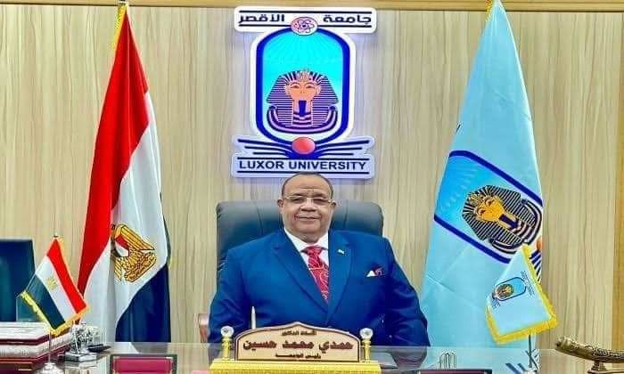

سعدني أن أرحب بكم في رحاب جامعة الأقصر، هذه المؤسسة العلمية العريقة التي وضعت نُصب عينيها منذ اليوم الأول لتأسيسها، بناء شخصية الطالب وتزويده بالمعارف والمهارات، وتدعيم خبراته وإطلاق قدراته وطاقاته، وتعزيز روح البحث والريادة والإبداع لديه، مع الالتزام بقواعد الخلق القويم والقيم الوطنية الأصيلة، ليكون عنصر فاعل ومؤثر في المجتمع.وتسعى جامعة الأقصر إلى أن تؤسس مكانة رفيعة محليا واقليميا ودوليا. وانطلاقا من ذلك تحرص الجامعة على أن تتواصل مع الجامعات العريقةِ العربية، والأجنبية، لأن أهداف التنمية لا تتجه إلى الطلبة فحسب بل تتجاوزهم إلى القائمين على التعليم، فتيسر لهم أسباب التزود بالمعرفة للارتقاء بالأداء من خلال التنمية البشرية والفكرية وتحفيزِ الإبداع في مجتمع تعلم جامعى متكامل من النواحى العلمية والأكاديمية والثقافية والفنية والرياضية، لتكون بوتقة تتلاقى فيها الأفكار وتنمى فيها المواهب وروح العملِ الجماعى. وتحرص جامعةالأقصر على تحقيق مخرجات تعليمِية متسقة مع احتياجات سوق العمل، الذي يتطلب درجة عالية من التميز والتنافسِ والإبداع، وذلك في إطار السعى إلى تحقيق الجودة في منظومة التعليم والتعلم والبحث العلمي وخدمة المجتمع بما يمكنها من المنافسة إقليمياً ودولياً والمساهمة في تنمية اقتصاد المعرفة بما يعود على المجتمع المصرى بالتقدم والرخاء.وفى الختام أتقدم بخالص الشكر والتقدير لجميع منسوبى جامعة الأقصر على كافة المستويات لجهودهم المتواصلة بما يسهم فى وصول جامعة الأقصر لمصاف الجامعات العالمية، ورقى وطننا الحبيب مصر.وتحرص جامعةالأقصر على تحقيق مخرجات تعليمِية متسقة مع احتياجات سوق العمل، الذي يتطلب درجة عالية من التميز والتنافسِ والإبداع، وذلك في إطار السعى إلى تحقيق الجودة في منظومة التعليم والتعلم والبحث العلمي وخدمة المجتمع بما يمكنها من المنافسة إقليمياً ودولياً والمساهمة في تنمية اقتصاد المعرفة بما يعود على المجتمع المصرى بالتقدم والرخاء
والله ولى التوفيق ،،، الأستاذ الدكتور / حمدى محمد حسين شحات

بسم الله الرحمن الرحيم